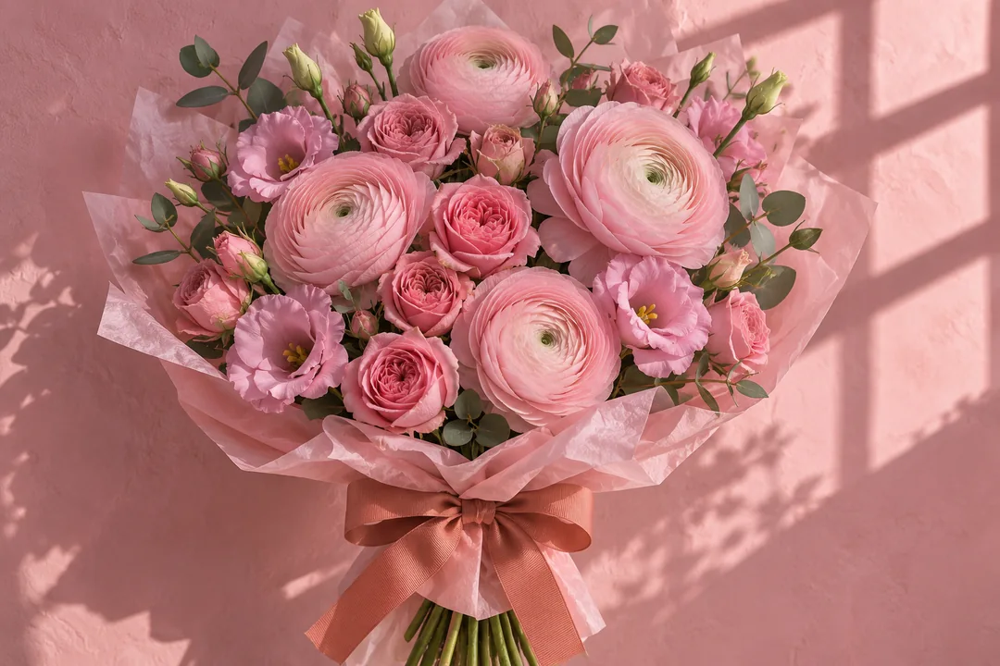
Букеты по поводу
Подбор по палитре, сезону и бюджету. Можно добавить открытку и подарочную упаковку.
Сезонные букеты, подарочная упаковка и доставка ко времени. Выберите готовую композицию или соберите букет в своём стиле.


Подбор по палитре, сезону и бюджету. Можно добавить открытку и подарочную упаковку.
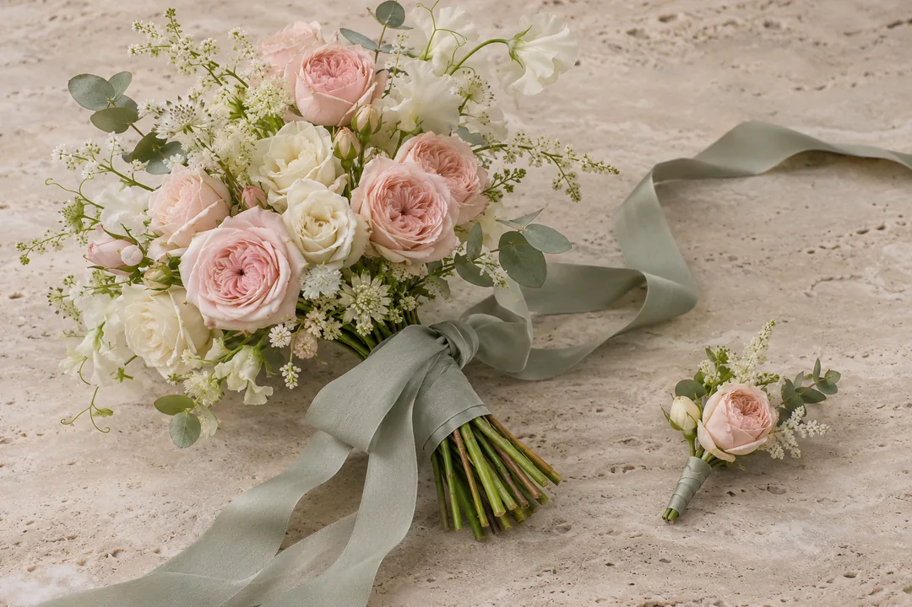
Букет невесты, бутоньерки, композиции на столы и оформление камерной церемонии.
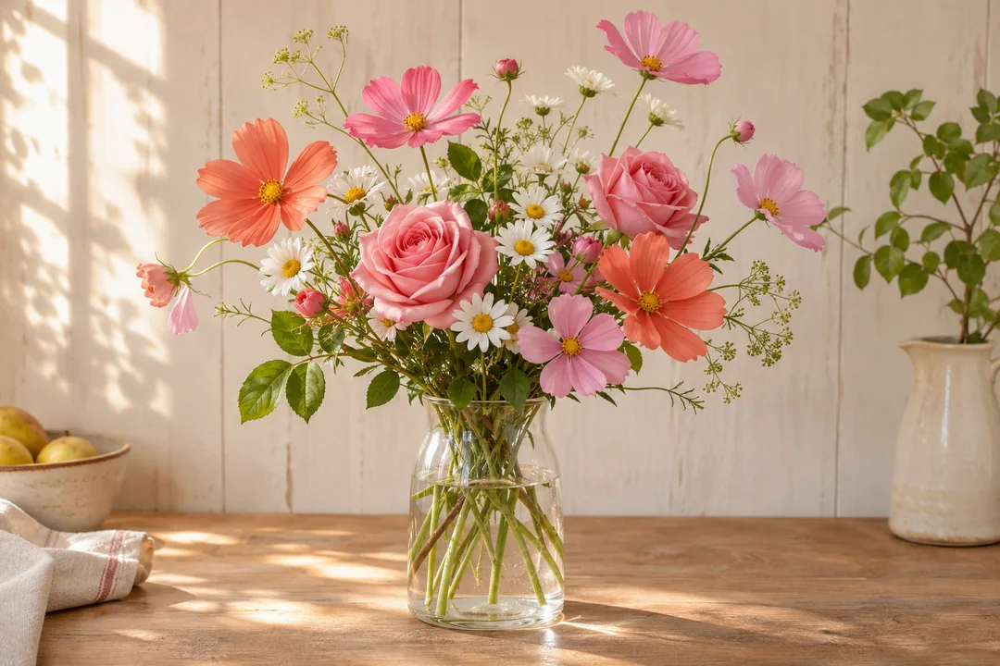
Свежие композиции домой, в офис или ресторан с согласованной частотой и размером.

Выбор интервала, фото композиции перед отправкой и возможность самовывоза.
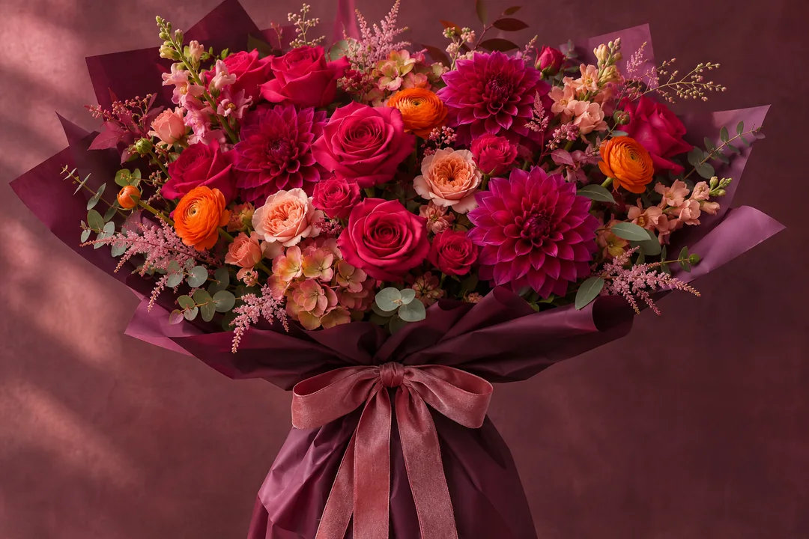
Серия букетов для команды или партнёров, общая стилистика и упаковка.
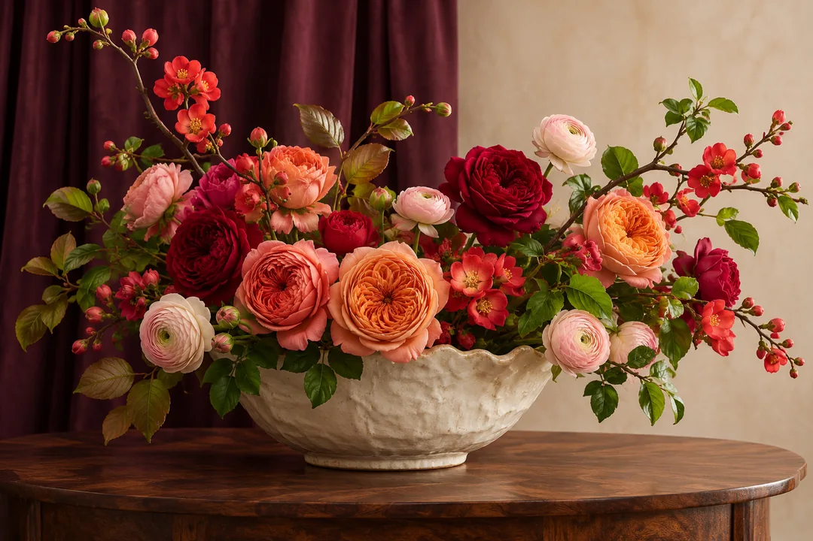
Подбор композиции под интерьер и памятка по уходу за сезонными цветами.
Выберите повод или понравившуюся палитру. В карточках указана ориентировочная цена за показанный размер.
Фото показывают варианты композиций. Состав сезонных букетов может меняться.
Показано 12 из 12
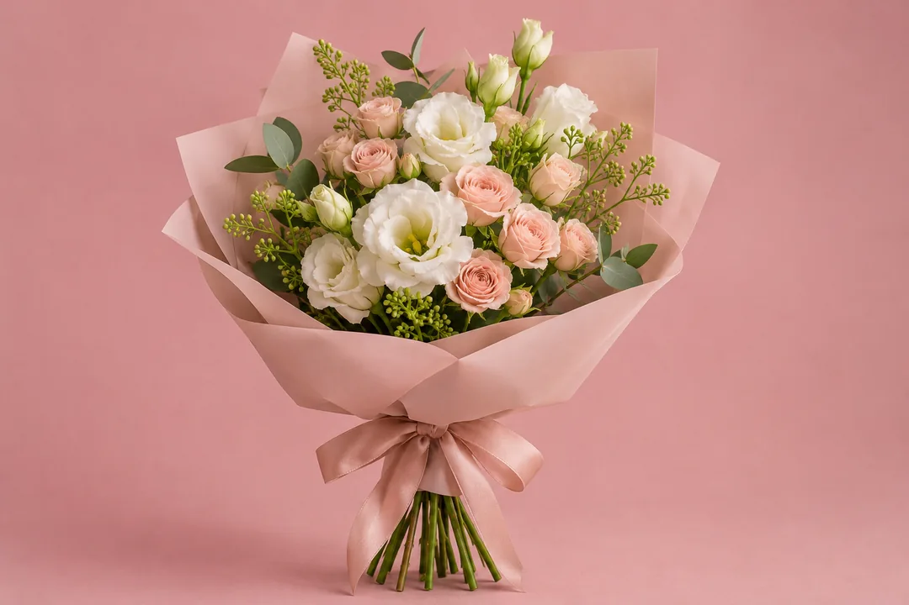
На каждый день
Эустома, кустовая роза и светлая упаковка. Компактный букет для небольшого знака внимания.
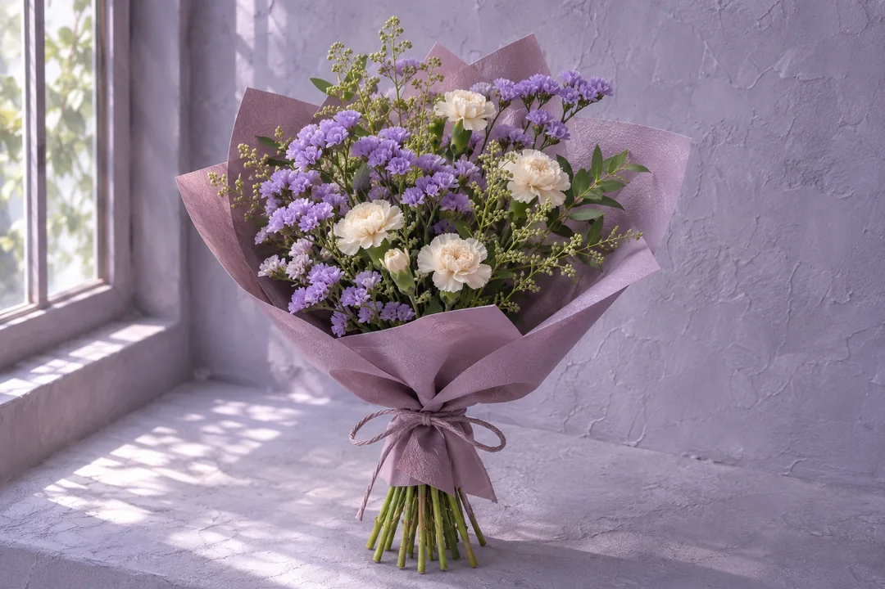
На каждый день
Лиловая статица, кремовые гвоздики и зелень в матовой бумаге.
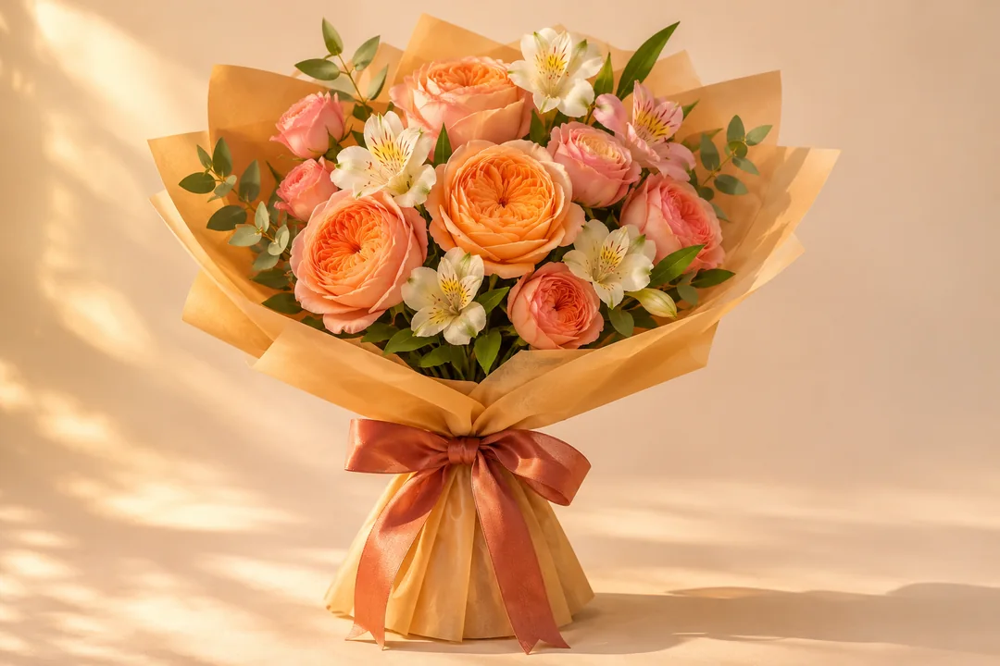
На каждый день
Персиковые розы и белая альстромерия в тёплой гамме.
Авторские
Кустовые розы, ранункулюсы и эустома. Сборка с мягкой асимметрией.
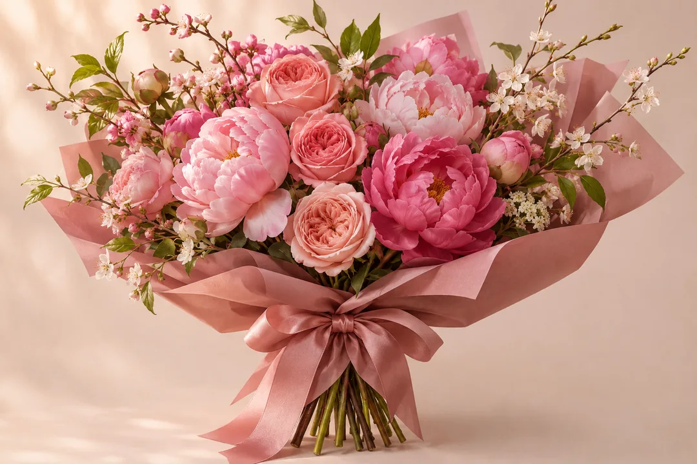
Авторские
Пионы, садовые розы и сезонные ветви в свободной композиции.

Авторские
Винные и коралловые цветы с выразительным центральным акцентом.
Для события
Букет невесты и бутоньерка в одной палитре. Состав согласуется по сезону.
Для события
Объёмный букет для юбилея в высокой упаковке с лентой.
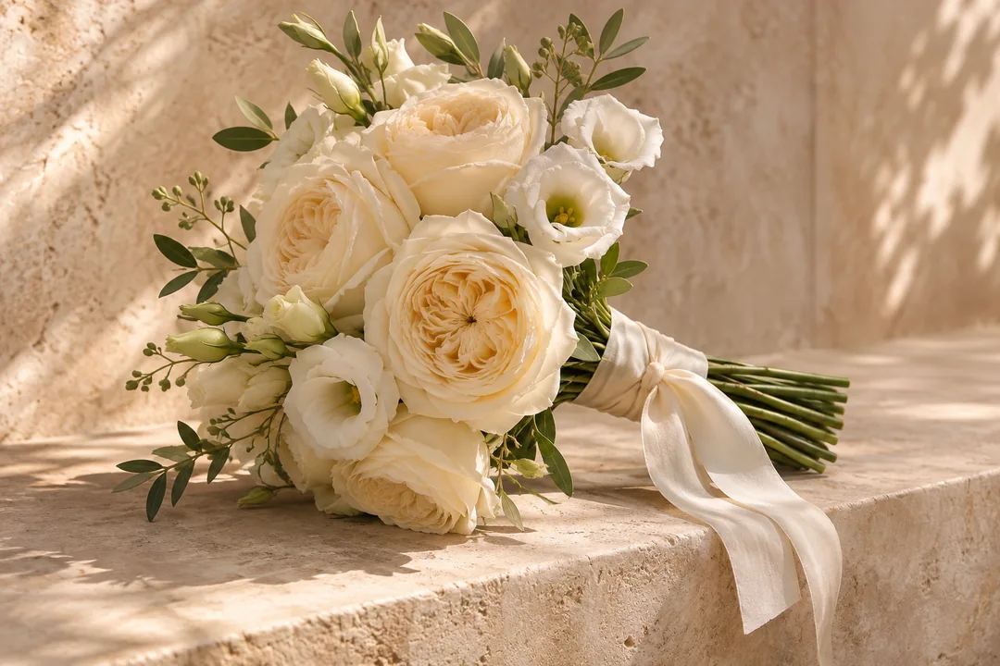
Для события
Свободная композиция из белых и кремовых цветов для торжественного повода.
Для интерьера
Настольная композиция в керамическом сосуде с невысоким силуэтом.
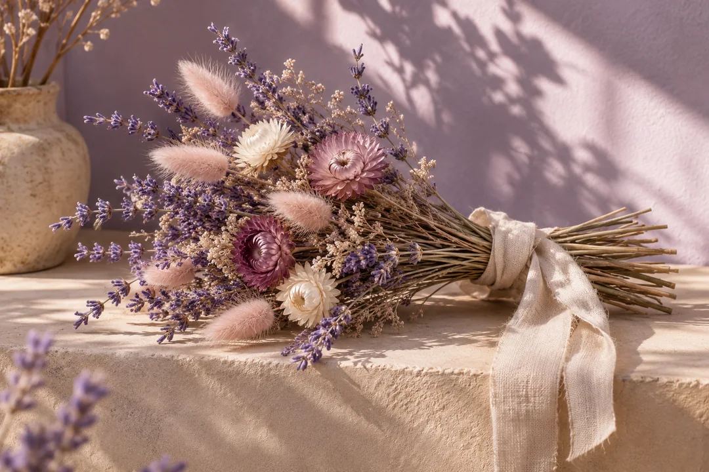
Для интерьера
Сухоцветы и лавандовые оттенки для прихожей, спальни или студии.
Для интерьера
Одна сезонная композиция в неделю. Цена указана за одну доставку.
Композицию можно задать по палитре и желаемым цветам. Сезонные замены согласовываются заранее.
Сначала выбираются дата, примеры палитры и объём работ. За несколько дней до события подтверждается состав.
Да. Конструктор показывает пример стоимости, а в симуляторе бота можно выбрать повод, бюджет и способ получения.
Выберите повод и бюджет, получите подборку и проверьте сценарий доставки.